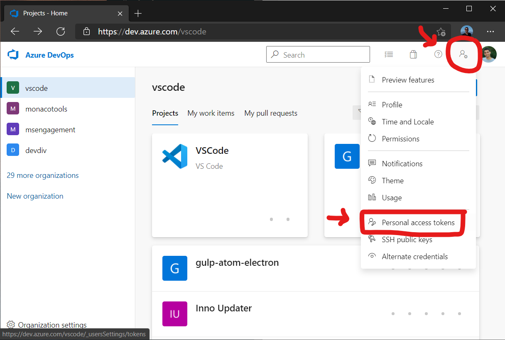
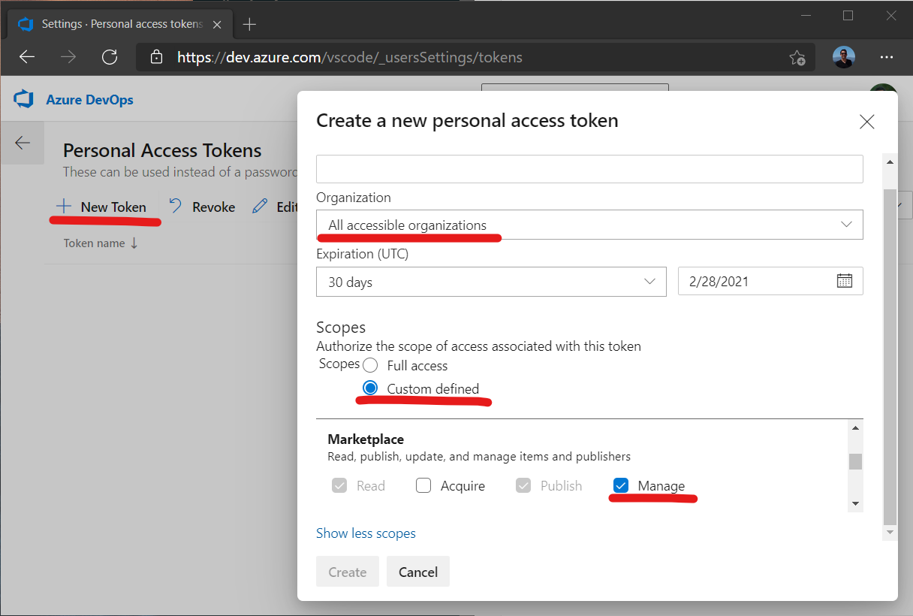
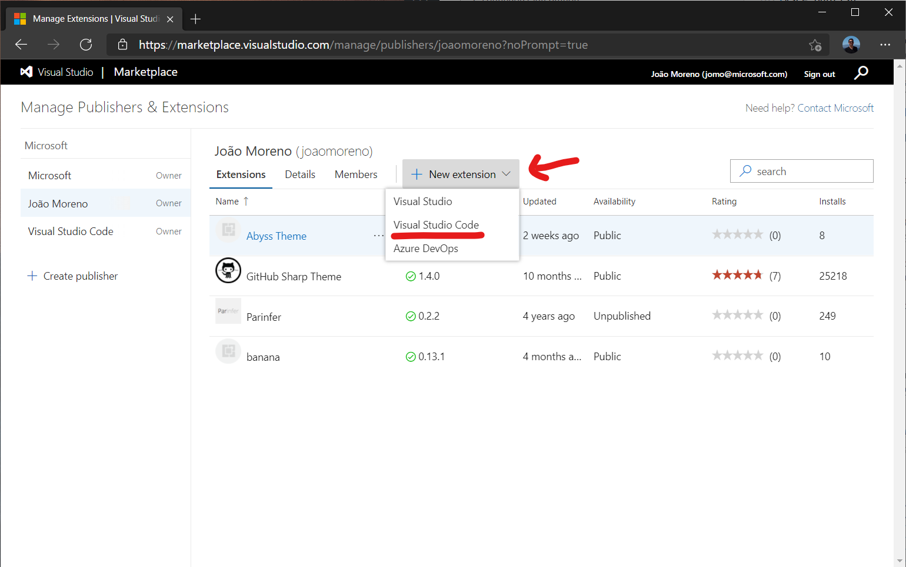
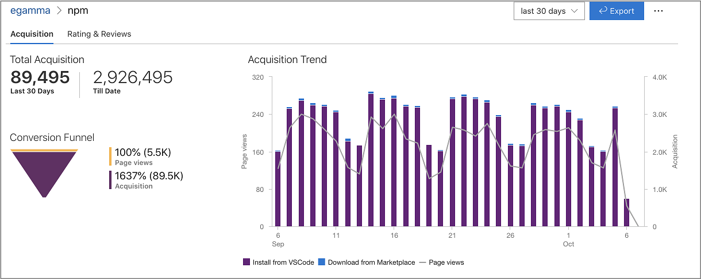
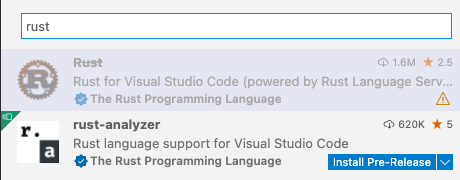
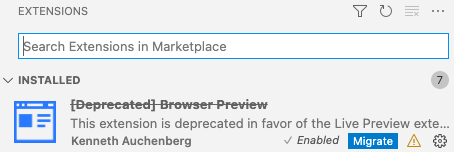
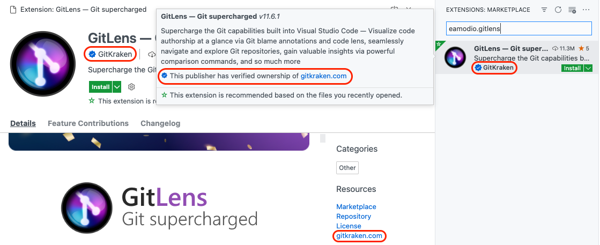
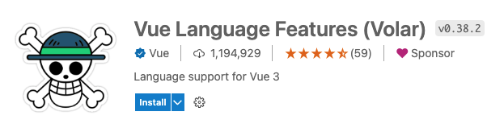
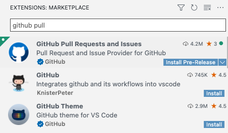

Publishing Extensions
Once you have made a high-quality extension, you can publish it to the VS Code Extension Marketplace so others can find, download, and use your extension. Alternatively, you can package an extension into the installable VSIX format and share it with other users.
This topic covers:
- Using vsce, the CLI tool for managing VS Code extensions
- Packaging, publishing and unpublishing extensions
- Registering a
publisherIdnecessary for publishing extensions
vsce
vsce, short for "Visual Studio Code Extensions", is a command-line tool for packaging, publishing and managing VS Code extensions.
Installation
Make sure you have Node.js installed. Then run:
npm install -g @vscode/vsce
Usage
You can use vsce to easily package and publish your extensions:
$ cd myExtension
$ vsce package
# myExtension.vsix generated
$ vsce publish
# <publisherID>.myExtension published to VS Code Marketplace
vsce can also search, retrieve metadata, and unpublish extensions. For a reference on all the available vsce commands, run vsce --help.
Publishing extensions
Note: Due to security concerns, vsce will not publish extensions that contain user-provided SVG images.
The publishing tool checks the following constraints:
- The icon provided in
package.jsonmay not be an SVG. - The badges provided in the
package.jsonmay not be SVGs unless they are from trusted badge providers. - Image URLs in
README.mdandCHANGELOG.mdneed to resolve tohttpsURLs. - Images in
README.mdandCHANGELOG.mdmay not be SVGs unless they are from trusted badge providers.
Visual Studio Code uses Azure DevOps for its Marketplace services. This means that authentication, hosting, and management of extensions are provided through Azure DevOps.
vsce can only publish extensions using Personal Access Tokens. You need to create at least one in order to publish an extension.
Visual Studio Marketplace does not allow reusing an extension name, the extension name must be unique. You will see following error, if an extension name already exist in the Marketplace.
ERROR The extension 'name' already exists in the Marketplace.
Get a Personal Access Token
First off, follow the documentation to create your own organization in Azure DevOps. In the following examples, the organization's name is vscode, you should use your new organization name as appropriate. Note that the organization's name doesn't necessarily have to be same as your publisher name.
From your organization's home page (for example: https://dev.azure.com/vscode), open the User settings dropdown menu next to your profile image and select Personal access tokens:

On the Personal Access Tokens page, select New Token to create a new Personal Access Token and set the following details:
- Give it a Name
- Set Organization to All accessible organizations
- Optionally extend its expiration date
- Set Scopes to Custom defined and choose the Marketplace > Manage scope

Select Create and you'll be presented with your newly created Personal Access Token. Copy it, you'll need it to create a publisher.
Create a publisher
A publisher is an identity who can publish extensions to the Visual Studio Code Marketplace. Every extension needs to include a publisher name in its package.json file.
You can create a new publisher through the Visual Studio Marketplace publisher management page. You need to login in with the same Microsoft account you used to create the Personal Access Token in the previous section.
Test your publisher's personal access token using vsce, while at the same time storing it for later usage:
vsce login <publisher name>
Publish an extension
You can publish an extension using vsce with the publish command:
vsce publish
This command will ask for the personal access token, if you haven't already provided it with the vsce login command above.
Alternatively, you can package the extension (vsce package) and manually upload it to the Visual Studio Marketplace publisher management page.

Review extension installs and ratings
The same Visual Studio Marketplace publisher management page gives you access to each extension's Acquisition Trend over time, as well as Total Acquisition counts and Ratings & Reviews. Right-click an extension and choose Reports.

Auto-incrementing the extension version
You can auto-increment an extension's version number when you publish by specifying the SemVer compatible number to increment: major, minor, or patch.
For example, if you want to update an extension's version from 1.0.0 to 1.1.0, you would specify minor:
vsce publish minor
This will modify the extension's package.json version attribute before publishing the extension.
You can also specify a complete SemVer compatible version on the command line:
vsce publish 2.0.1
Note: If
vsce publishis run in a git repo, it will also create a version commit and tag via npm-version. The default commit message will be extension's version, but you can supply a custom commit message using the-mflag. (The current version can be referenced from the commit message with%s.)
Unpublishing extensions
You can unpublish an extension with the vsce tool by specifying the extension ID publisher.extension.
vsce unpublish (publisher name).(extension name)
Note: When you unpublish an extension, the Marketplace will remove any extension statistics it has collected. You may want to update your extension rather than unpublish it.
Deprecating extensions
An extension can be just deprecated or deprecated in favour of another extension or a setting. VS Code will not automatically migrate or uninstall deprecated extensions. VS Code will render extensions as deprecated in the UI, as shown in the search sample below where the first result is deprecated. If a deprecated extension has an alternative extension or a setting the VS Code UI will guide users to migrate to the new extension or setting.

VS Code will not automatically migrate or uninstall already installed deprecated extensions. Instead it will provide the following Migrate UI:

In order to mark your extension as deprecated, please reach out to us by commenting here.
Note: For now the extension will not be rendered as deprecated in the Marketplace. Support for this will come later.
Packaging extensions
If you want to test an extension on your local install of VS Code or distribute an extension without publishing it to VS Code Marketplace, you can choose to package your extension. vsce can package your extension into a VSIX file, from which users can easily install. Some extensions publish VSIX files to each GitHub release.
For extension authors, they can run vsce package in extension root folder to create such VSIX files.
For users who receive such a VSIX file, they can install the extension with code --install-extension my-extension-0.0.1.vsix.
Sharing privately with others
If you want to share your extension with others privately, you can send them your packaged extension .vsix file.
Your extension folder
To load an extension, you need to copy the files to your VS Code extensions folder .vscode/extensions. Depending on your platform, it is located in the following folders:
- Windows
%USERPROFILE%\.vscode\extensions - macOS
~/.vscode/extensions - Linux
~/.vscode/extensions
Visual Studio Code compatibility
When authoring an extension, you will need to describe what is the extension's compatibility to Visual Studio Code itself. This can be done via the engines.vscode field inside package.json:
{
"engines": {
"vscode": "^1.8.0"
}
}
A value of 1.8.0 means that your extension is compatible only with VS Code 1.8.0. A value of ^1.8.0 means that your extension is compatible with VS Code 1.8.0 and onwards, including 1.8.1, 1.9.0, etc.
You can use the engines.vscode field to make sure the extension only gets installed for clients that contain the API you depend on. This mechanism plays well with the Stable release as well as the Insiders one.
For example, imagine that the latest Stable version of VS Code is 1.8.0 and that during 1.9.0's development a new API is introduced and thus made available in the Insider release through version 1.9.0-insider. If you want to publish an extension version that benefits from this API, you should indicate a version dependency of ^1.9.0. Your new extension version will be installed only on VS Code >=1.9.0, which means all current Insider customers will get it, while the Stable ones will only get the update when Stable reaches 1.9.0.
Advanced usage
Marketplace integration
You can customize how your extension looks in the Visual Studio Marketplace. See the Go extension for an example.
Here are some tips for making your extension look great on the Marketplace:
- A
README.mdfile at the root of your extension will be used to populate the extension's Marketplace page's contents.vscewill modify README links for you in two different ways:- If you add a
repositoryfield to yourpackage.jsonand it is a public GitHub repository,vscewill automatically detect it and adjust relative links accordingly, using themasterbranch by default. You can override the GitHub branch with the--githubBranchflag when runningvsce packageorvsce publish. - For more fine-grained control, you can set the
--baseContentUrland--baseImagesUrlflags to set the base URLs for relative links.
- If you add a
- A
LICENSEfile at the root of your extension will be used as the contents for the extension's license. - A
CHANGELOG.mdfile at the root of your extension will be used as the contents for the extension's change log. - You can set the banner background color by setting
galleryBanner.colorto the intended hex value inpackage.json. - You can set an icon by setting
iconto a relative path to a squared128pxPNG file included in your extension, inpackage.json.
Also see Marketplace Presentation Tips.
Verify a publisher
You can become a verified publisher by verifying ownership of an eligible domain associated with your brand or identity. Verifying your publisher will demonstrate your authenticity and add a verified badge to your extensions.

To verify a publisher:
- Visit the Visual Studio Marketplace publisher management page.
- Select or create a publisher you wish to verify.
- Input an eligible domain in the Verified domain field, save, and select Verify.
- Follow the instructions in the dialog to add a TXT record to your domain's DNS configuration.
- Select Verify to validate that the TXT record has been successfully added.
Once your TXT record has been validated, the Marketplace team will review your request and grant verification within 5 business days.
Eligible domains
Eligible domains meet the following criteria:
- Cannot be a subdomain ({subdomain}.github.io, {subdomain}.contoso.com, or similar).
- You must be able to manage the DNS configuration settings and add a TXT record.
- Your domain must use HTTPS protocol.
- Your domain must be able to serve an HTTP 200 status response to a HEAD request.
Extension pricing label
You can add a pricing label to your extension in the Marketplace to indicate that it is FREE or FREE TRIAL.
As an extension author, you can opt-in to display a pricing label on your extension page by adding the pricing field to your package.json, for example:
{
"pricing": "Free"
}
The value of the pricing field can be either Free or Trial. Note that these values are case-sensitive.
If you do not add the pricing field to your package.json, the default label will be FREE.
Note: Make sure to use the
vsceversion >=2.10.0when publishing your extension for the pricing label to work.
Extension Sponsor
An extension can opt-in to sponsorship by adding a sponsor field in its package.json, with the url field for the sponsorship link the extension author would like to use. For example:
"sponsor": {
"url": "https://github.com/sponsors/nvaccess"
}
Note: Make sure to use the
vsceversion >=2.9.1when publishing your extension for sponsorship to work.
If an extension opts-into this VS Code will render a Sponsor button in the extension details page header.

We hope this will allow our users to fund the extensions that they depend on to improve the extension's performance, reliability, and stability.
Using .vscodeignore
You can create a .vscodeignore file to exclude some files from being included in your extension's package. This file is a collection of glob patterns, one per line.
For example:
**/*.ts
**/tsconfig.json
!file.ts
You should ignore all files not needed at runtime. For example, if your extension is written in TypeScript, you should ignore all **/*.ts files, like in the previous example.
Note: Development dependencies listed in devDependencies will be automatically ignored, you don't need to add them to the .vscodeignore file.
Pre-publish step
It's possible to add a pre-publish step to your manifest file. The command will be called every time the extension is packaged.
{
"name": "uuid",
"version": "0.0.1",
"publisher": "someone",
"engines": {
"vscode": "0.10.x"
},
"scripts": {
"vscode:prepublish": "tsc"
}
}
This will always invoke the TypeScript compiler whenever the extension is packaged.
Pre-release extensions
Users can choose to install pre-release versions of extensions in VS Code or VS Code Insiders in order to regularly get the latest extension version before the official extension release.

For extensions to publish a pre-release version, a pre-release flag needs to be passed in the package and publish step:
vsce package --pre-release
vsce publish --pre-release
We only support major.minor.patch for extension versions and semver pre-release tags are not supported. Support for this will arrive in the future.
VS Code will auto update extensions to the highest version available, so even if a user opted into a pre-release version and there is an extension release with a higher version, that user will be updated to the released version.
Because of this we recommend that extensions use major.EVEN_NUMBER.patch for release versions and major.ODD_NUMBER.patch for pre-release versions. For example: 0.2.* for release and 0.3.* for pre-release.
If extension authors do not want their pre-release users to be updated to the release version, we recommend to always increment and publish a new pre-release version before publishing a release version in order to make sure that the pre-release version is always higher. Note that while pre-release users will be updated to a release version if it is higher, they still remain eligible to automatically update to future pre-releases with higher version numbers than the release version.
Pre-release extensions are supported after VS Code version 1.63.0 and so all pre-release extensions needs to set engines.vscode value in their package.json to >= 1.63.0.
Note: Extensions that already have a separate stand alone pre-release extension should reach out to the VS Code team to enable the automatic uninstall of the outdated separate extension and install of the pre-release version of the main extension.
Platform-specific extensions
Extensions can publish different VSIXs for each platform (Windows, Linux, macOS) VS Code is running on. We call such extensions platform-specific extensions.
Starting with version 1.61.0, VS Code looks for the extension package that matches the current platform.
Platform-specific extensions are useful if your extension has platform-specific libraries or dependencies, so you can control the exact binaries that are included in a platform package. A common use case is the use of native node modules.
When publishing platform-specific extensions, a separate package needs to be published for every platform that has platform-specific content. You can still publish a package without the --target flag and that package will be used as a fallback for all platforms for which there is no specific platform-specific package.
The currently available platforms are: win32-x64, win32-ia32, win32-arm64, linux-x64, linux-arm64, linux-armhf, alpine-x64, alpine-arm64, darwin-x64 and darwin-arm64.
If you want a platform-specific extension to also support running in the browser as a web extension, it must target the web platform when publishing. The web platform will respect the browser entry point in the package.json. The extension capabilites that are not supported in the web should use when clauses in the package.json to make sure that they are disabled. We do not recommend that extensions ship a different package.json for the web platform or to remove parts of the VSIX that do not work in the web.
Publishing
Starting from version 1.99.0, vsce supports a --target parameter that allows you to specify the target platform while packaging and publishing a VSIX.
Here's how you can publish a VSIX for the win32-x64 and win32-ia32 platforms:
vsce publish --target win32-x64 win32-ia32
Alternatively, you can also use the --target option when packaging to simply create a platform-specific VSIX. The VSIX can later be published to the Marketplace as usual. Here's how to do it for the win32-x64 platform:
vsce package --target win32-x64
vsce publish --packagePath PATH_TO_WIN32X64_VSIX
If VS Code does not detect a specific VSIX for win32-x64 or win32-arm64 platforms it will fallback to win32-ia32 vsix. Because of this we recommend that if you publish multiple platforms that you publish win32-ia32 last to avoid some users on win32-x64 or win32-arm64 getting the fallback package, while the right package is about to get uploaded.
Continuous Integration
Managing multiple platform-specific VSIXs might get overwhelming, so we suggest to automate your extension's build process in Continuous Integration. Using GitHub Actions is a good approach. Our platform-specific extension sample can be used as a learning resource; its workflow enables the common scenario of using platform-specific extension support to distribute native node modules as dependencies across all supported VS Code targets.
Next steps
- Extension Marketplace - Learn more about VS Code's public Extension Marketplace.
- Testing Extensions - Add tests to your extension project to ensure high quality.
- Bundling Extensions - Improve load times by bundling your extension files with webpack.
Common questions
I get 403 Forbidden (or 401 Unauthorized) error when I try to publish my extension?
One easy mistake to make when creating the PAT (Personal Access Token) is to not select All accessible organizations in the Organizations field dropdown (instead selecting a specific organization). You should also set the Authorized Scopes to Marketplace (Manage) for the publish to work.
I can't unpublish my extension through the vsce tool?
You may have changed your extension ID or publisher name. You can also manage your extensions directly on the Marketplace by going to the manage page. You can update or unpublish your extension from your publisher manage page.
Why does vsce not preserve file attributes?
Note that when building and publishing your extension from Windows, all the files included in the extension package will lack POSIX file attributes, namely the executable bit. Some node_modules dependencies rely on those attributes to properly function. Publishing from Linux and macOS works as expected.
Can I publish from a continuous integration (CI) build?
Yes, see the Automated publishing section of the Continuous Integration topic to learn how to configure Azure DevOps, GitHub Actions, and Travis CI to automatically publish your extension to the Marketplace.